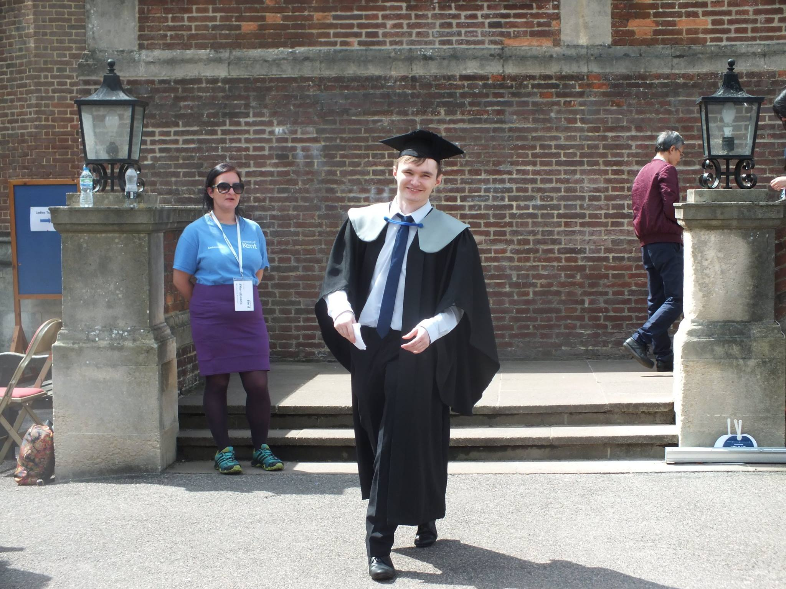

Samuel Cox

LinkedIn Github NoiseDB
About me:
I am a 22 year old, working as a software developer for
BigHand in London, having graduated from the University of Kent
with a first class degree in Computer Science. I take a great interest in all things .NET, and this is where most of my experience lies. I also
have a secondary language in Erlang, with lesser experience in many more. On a higher level, distributed systems, parallelism, concurrency and security all interest me a lot too. Outside of
computing, I am an avid video-gamer, club goer, live music lover, and general social extrovert. I am deeply passionate about poltics and the sciences also.